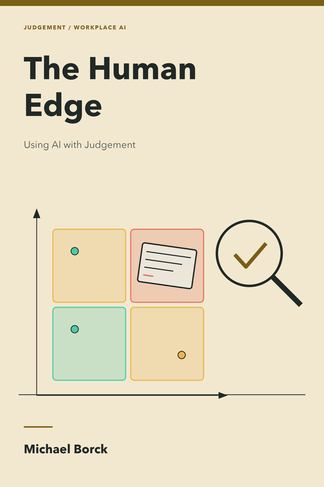

The Human Edge
Using AI with Judgement
Preface

Everyone has the same AI tools now. The edge is judgement.
Why this book exists
Something has changed at work, and it is easy to miss because the output looks so good.
A report arrives. It is fluent, well structured, and complete. So does a data brief, a proposal, and a plan for a difficult conversation. Any professional with Copilot, ChatGPT, Claude, or Gemini can now produce work that looks like this, in minutes. Generic competence used to be an advantage. It is now the baseline everyone shares.
This book has a name for working that way without noticing: vibe professionalism. Vibe coding produces plausible software without understanding it. Vibe professionalism produces plausible reports, analyses, and proposals without briefing them well, checking what they rest on, or owning the decision they feed. The work looks professional. The professionalism is missing.
The failure is hard to spot. A rushed human draft looks rushed, and gaps show. An AI output that is wrong arrives polished, complete, and confident, in the same tone as an output that is right. The instinct you have spent your career building, the one that tells you weak work when you see it, stays quiet when you need it.
This book teaches the alternative. When everyone has the same tools, the edge moves to what the tool cannot manufacture: your judgement. That means knowing what to ask for, deciding how much to trust the answer, checking it from outside the tool, and keeping a person in charge where the stakes require it. You will practise each of those on your own work.
Who this book is for
Professionals in any role and industry who use AI in their everyday work, or are about to. Team leaders who want to put AI into a team workflow responsibly will get particular value from Part 4.
No technical background is required. You do not need to write code. You need real work to practise on, and a willingness to check output you would rather forward.
If you lead decisions about which AI projects your organisation should fund, that is the companion volume, The Human Edge: Leading AI with Judgement, in development. This book builds the personal judgement that volume takes to the organisation.
What this book is not
It is not a guide to a particular AI tool. The four tools here work on Copilot, ChatGPT, Claude, Gemini, and whatever ships next. Product details, menu names, and model comparisons are confined to Appendix E, where they can date without taking the book with them.
It is not a prompt library with a book wrapped around it. Appendix B gives you 27 starter prompts to copy and adapt. The chapters teach you to write your own, and to attach the right check to each one.
It is not Conversation, Not Delegation retitled. That companion book teaches how to think with AI in any discipline. This book is narrower and more practical: how to stay credible at work when fluent AI output is everywhere. Where the two overlap, on RTCF and VET, this book teaches the working version and points to the deeper treatment.
How this book is structured
The book follows the Curtin Executive Education masterclass of the same name: four parts, one tool each, one question each.
| Part | Tool | The question | You leave with |
|---|---|---|---|
| 1 · Judge | Trust Tool | How much should I trust this output? | A ten-second habit for every output |
| 2 · Brief | RTCF | How do I ask for what I need? | Your own prompt library |
| 3 · Check | Check Loop | How do I know it’s right? | An analysis you have verified yourself |
| 4 · Deliver | Opportunity Finder | Will it work every week? | A delivery plan with a 30-day gate |
Part 1 explains what these tools produce and why their mistakes do not look like mistakes. You will learn to place any output in one of four corners in about ten seconds. The corner sets the check.
Part 2 teaches briefing. Prompting is briefing a capable new colleague, and Context does most of the work. You will add upgrades when output is weak, push back when the tool agrees too easily, and save what works as a standing brief.
Part 3 is about verification. You will analyse a real dataset with AI, then test three fluent claims made about it. One is verified, one is refuted, and one is overstated. You will also write down how you make one repeatable decision, and test those rules blind against calls you have already made.
Part 4 takes the same judgement into delivery. You will choose one workflow from your own role, decide which steps AI leads and which stay with a person, design the human checkpoints in from the start, and set a Scale, Pivot, or Kill decision for 30 days’ time.
By the end, you should be able to:
- decide how much to trust any AI output, on any tool, and check it from outside the tool;
- brief AI so the first output is close to usable, and improve weak output without starting again;
- use AI to analyse data without being fooled, and say what you checked;
- put AI into one real workflow with human checkpoints designed in, and defend the 30-day call.
How to read this book
Work on your own tasks as you go. Each part ends in exercises drawn from the masterclass, collected in Appendix C. Keep a small record: your pass before AI, the brief you used, the corner you placed the output in, and what you checked. That record is the evidence that the work is yours.
Most exercises need an AI tool you are allowed to use at work and a spreadsheet. Nothing in this book requires you to paste confidential material into a tool. Where your own work cannot go into a tool, use the scenario and decision cards in Appendix C, or the shape trick in Chapter 6: describe the data and let the spreadsheet do the sums.
Conventions used in this book
Green boxes are short exercises you can do now, most in five to twenty-five minutes.
Blue boxes mark an idea, a prompt, or a distinction worth pausing on.
Yellow boxes flag fluent output that looks right and is not, and the habits that let it through.
Red boxes mark the checks and safeguards that are not optional. Do not skip these.
RetailFlow, the fictional retailer whose customer service data you will analyse in Chapter 6, appears in grey case boxes. Its dataset is available with the online edition.
How this book was written
This book began as a one-day masterclass, The Human Edge: Using AI with Judgement, first marketed as AI for Professionals: Building Everyday Capability. The slides, exercises, field guide, and companion site from that day are the skeleton. The chapters expand the speaker notes, show the worked answers the room produced, and add the reading a single day has no room for.
It was written using the method it teaches. AI drafted, the author pushed back. Claims that sounded right were checked against the dataset and the sources. Every figure in the RetailFlow case was recomputed from the file readers download.
If that makes you ask whether you should trust it, Chapter 1 gives you a tool for answering that question about any output, including this book’s own.
Sources and credits. Australian evidence in Chapter 11 draws on the Department of Employment and Workplace Relations (2026) and Jobs and Skills Australia (2025). The Decide Like Me method in Chapter 8 draws on Dylan Davis. “Gell-Mann amnesia” is Michael Crichton’s term (2002), named after the physicist Murray Gell-Mann. The Trust Tool, RTCF, and conversation-not-delegation ideas are developed at greater length in Conversation, Not Delegation.
Ways to engage with this book
- Read it online. The full book is freely available at the companion website, with search and navigation.
- Download the PDF or EPUB. Generated from the same source, available from the website.
- Do the day. The masterclass companion site has the interactive workbook, the prompt builder, the Trust Tool game, and the slides: michael-borck.github.io/the-human-edge.
- Converse with it. Use the
llm.txtfile to load the book into an AI tool, then apply Chapter 7 to what it tells you. - Explore the source. The full source is on GitHub, including the chapter map and the source-site archive this book was seeded from.
- Browse all books. This book is part of a series. See all titles at books.borck.education.
The online version is always the most current.
Where this book sits
The series has a conceptual trunk and domain branches. Conversation, Not Delegation is the method; this book is the practice. The branches take those habits into code, web work, security, teaching, evidence and building with agents.
The trunk was named after the branches grew. The books came first, and the same ideas kept returning under different names. Naming them now makes the relationship explicit; it does not make the series a hierarchy.
| Route | Start here | Continue with |
|---|---|---|
| Everyday professional work | The Human Edge: Using AI with Judgement | Conversation, Not Delegation |
| Choosing AI investments | The Human Edge: Using AI with Judgement | The Human Edge: Leading AI with Judgement (in development) |
| Evaluating applied AI | Prove, Don’t Persuade | Substantiate, Don’t Assume |
| Teaching with AI | Partner, Don’t Police | Conversation, Not Delegation |
| Building with agents | Speak Software | Build AI, Understand AI |
| Understanding the machinery | Build AI, Understand AI | Speak Software |
Start here if you want judgement at your own desk first. Start with Conversation, Not Delegation if you want the general method of thinking with AI before the workplace tools.